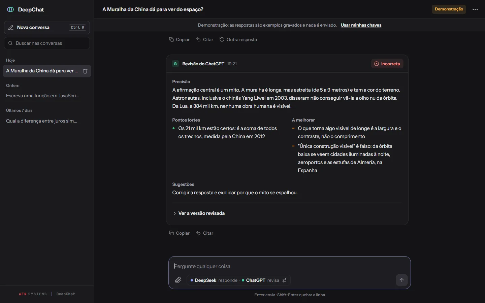
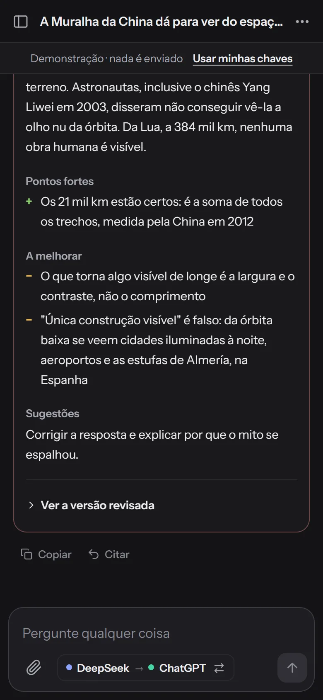

DeepChat
O DeepSeek responde e o ChatGPT confere a resposta.


Nesta página: 01Por que existe
Por que existe
Desde o começo das IAs, as respostas nem sempre são confiáveis para atividades, trabalho ou escola. Para conferir, eu levava a resposta de uma IA para outra, com a mesma pergunta, até as duas debaterem e chegarem a um consenso. Ser o mensageiro cansava; o DeepChat virou um “grupo de WhatsApp” com as duas IAs que eu mais usava.
Problema, sistema e prova
Problema
Conferir uma resposta exigia copiar e colar entre duas IAs.
Sistema
Chat em que o DeepSeek responde e o ChatGPT revisa a resposta com um veredito, pontos fortes, o que melhorar e, quando há erro, uma versão revisada. Sem servidor: tudo roda no navegador.
Prova
65 testes
node --test no GitHub Actions. Conferidos em 9/11/2026.
Por dentro
-
Veredito em destaque
Cada resposta recebe um veredito: correta, parcialmente correta ou incorreta.
-
Versão revisada
Na demonstração, a função de CPF sai parcialmente correta porque aceita 111.111.111-11, e a revisão traz a versão corrigida. Nesta tela a ordem está invertida (o ChatGPT responde e o DeepSeek revisa): um clique troca quem responde e quem revisa.
-
Sem servidor
As perguntas vão direto do navegador às APIs, e as chaves, se guardadas, ficam criptografadas. A demonstração dispensa chave.
-
A revisão cabe no celular
Pontos fortes, o que melhorar e sugestões numa coluna só, e a versão revisada a um toque.
Como foi construído
Arquitetura
Escrevi o DeepChat em módulos ES, sem framework, sem build e sem servidor. O app.js conduz cada turno: pede a resposta a uma IA e entrega pergunta e resposta à outra, que revisa. As chamadas às APIs ficam no api-client.js, a leitura da revisão no revisao.js e o desenho da tela no ui.js, sem regra de negócio. O histórico e as preferências ficam no localStorage do próprio navegador.
Ver no código: app.js L436–475 app.js L573–602 ui.js L1–7 README.pt-BR.md L225–247
- Pergunta no navegador
- Resposta em stream
- Revisão pela outra IA
- Veredito na tela
- Histórico no navegador
Decisões técnicas
Revisão em formato fixo, lida pela tela
O prompt do revisor pede um formato exato: a linha
Veredito:e as seções Precisão, Pontos fortes, A melhorar, Sugestões e, só quando há erro, Versão revisada. OlerRevisaosepara essas partes para a tela pôr o veredito em destaque e cada seção no seu lugar. Se o modelo fugir do formato, a revisão aparece inteira como texto comum; o formato antigo, com emojis, também é lido.Ver no código: revisao.js L29–61 revisao.js L113–157 README.pt-BR.md L167–170
Chaves cifradas por uma chave não exportável
Lembrar as chaves vem desmarcado. Marcado, o
storage.jscifra as duas com AES-GCM usando umaCryptoKeyaleatória, criada como não exportável e guardada no IndexedDB; nolocalStoragefica só o texto cifrado. Assim as chaves não ficam legíveis num backup ou numa cópia do perfil. O README registra o limite: código rodando na mesma origem ainda pode pedir ao navegador que decifre.Ver no código: storage.js L1–18 storage.js L93–105 storage.js L136–175 README.pt-BR.md L125–138
Markdown das IAs passa pelo DOMPurify
O texto das IAs vira HTML pelo
markede passa pelo DOMPurify com uma lista fechada de tags e atributos. Um gancho só deixaclassem<code>com nome de linguagem, para o texto não usar as classes do app, e todo link abre em outra aba comnoopener noreferrer. A CSP não aceita'unsafe-inline', libera conexão só às duas APIs, e as bibliotecas têm versão fixa com SRI.Ver no código: ui.js L59–100 index.html L6–12 index.html L43–44
Desafio
Stream que cai no meio da resposta
A resposta chega por Server-Sent Events, e os pedaços da rede cortam linhas ao meio; o criarLeitorSSE guarda o resto até a linha fechar. Nova tentativa, com espera crescente, só acontece enquanto nenhum texto chegou. Se a conexão fecha sem [DONE] nem motivo de parada, a resposta é tratada como cortada: o que chegou fica na conversa, marcado, e não vai para a revisão. Cada pedaço renova o prazo de 60 s.
Ver no código: api-client.js L91–125 api-client.js L127–210 api-client.js L222–247 app.js L550–557
Testes
São 65 testes com node --test, sem dependências. Cobrem a leitura da revisão, a conversa e o contexto enviado às APIs, as cores no código e a CSP das páginas. O stream é testado sem rede, com um fetch falso que corta a conexão. O cofre roda com localStorage e IndexedDB falsos e o crypto.subtle de verdade. Os exemplos da demonstração também são conferidos. O GitHub Actions roda tudo a cada push, em Node 24.
Ver no código: api.test.mjs storage.test.mjs L1–8 demo.test.mjs L36–58 csp.test.mjs testes.yml
Stack e links
Stack
JavaScript (ES modules), DeepSeek API, OpenAI API, marked, DOMPurify, Web Crypto, node:test, GitHub Actions